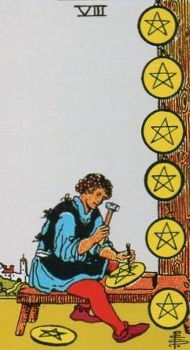
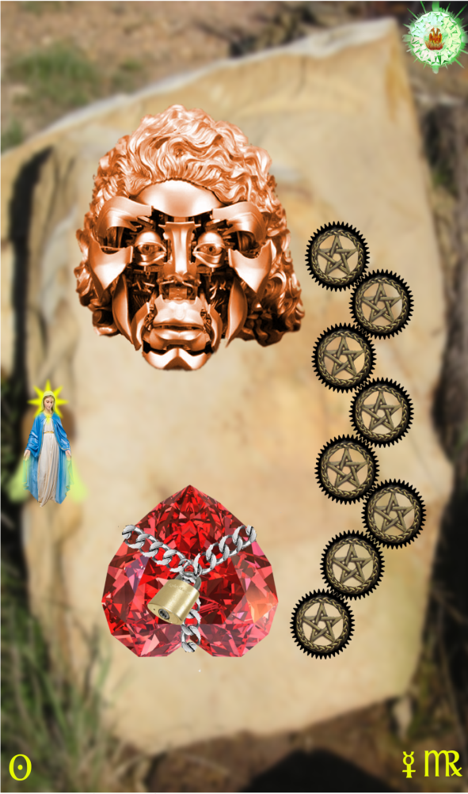
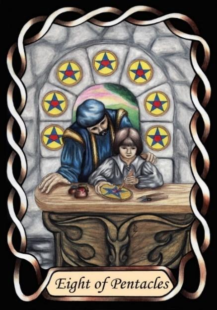

Eight of Pentacles



Sign |
|
Six: Age |
|
Sign Ruler |
|
Element |
Earth: practical |
Modality |
|
Symbol |
Virgin |
Decan |
|
Decan Ruler |
|
Time |
Aug 24 - Sep 3 |
System Builders Virgo I
An Apprentice in infirmity and age returns to previous skills from previous mastery, hoping to hold on to glory days. He continues to exercise his skills creating beautifully crafted mechanisms in order to win respect and admiration, but living in denial of the inevitability of old age and failing capabilities.
Example: Michael Jackson
Goldschneider Personology
These people like structure and order, and are very comfortable with routine. However, the chaotic nature of the material world can greatly stress them, pushing them to take rigid stances against that chaos. Their thoughts are similarly ordered and structured, often to the detriment of their emotions. They can have a strange fascination with mechanisms.
RWS Imagery
A Virgo-one is happy and comfortable with structure and order, good with hands, and with thought behind them, but will but the benefits will not come from sale of his goods or services, but rather through use of his own creations.
Pymander Imagery
Michael Jackson was of this decan. His mechanical mask is highly evocative of Goldschneider’s “fascination with mechanisms”, as is the gear-like nature of the Pentacles. The chained, inverted heart is indicative of the stress they feel in a chaotic world. As the Apprentice, they like to be left in peace to practice their craft.
Also note that this card has both the old soul aspect of Virgo, and the youth, innocence and vulnerability of the Apprentice.
Summary
Represents skilled craftsmanship, denial of aging, and desire for order.